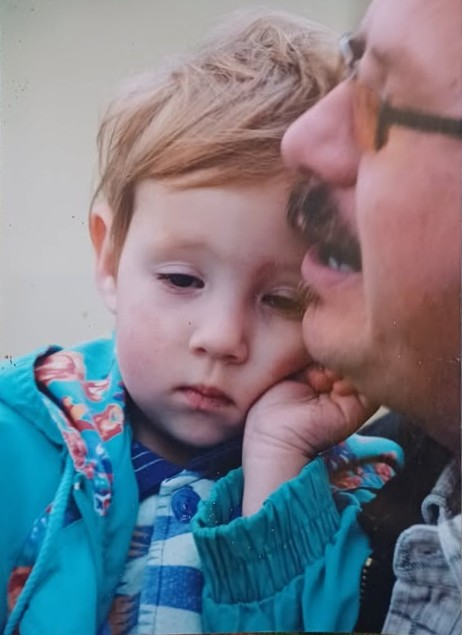

Gyerekkor és család
Csenge Zalaegerszegen született 2006-ben. Gyermekkorát Gyenesdiáson töltötte, ahol családja fontos szerepet játszott az életében. Már fiatalabb korában is érdekelte rajzolás és néptánc, amely később a festészet felé is közelebb vezette.